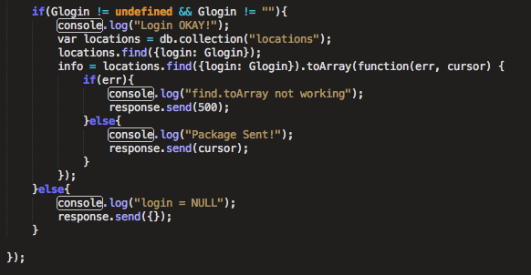

Security Assessment of MMAP Database APIs
Introduction
This assignment tests the security of the Database Server API created by Lucas Johnson for Assignment 3. The programs he created, and the databases hosted on Heroku, are intended to record users' login, latitude, and longitude in a MongoDB Database. There are additional functionalities that can return a JSON list of the database's entries, and a homepage to display the results. However, vulnerabilities in the application currently make it unsuitable for public use. This document identifies those vulnerabilities and suggests solutions for them.
It is worth noting that the ability for a third party to easily access the database of locations with the provided HTTP POST is a given. Though this is certainly a disturbing feature of the API currently, this is how the API was designed to behave, so this document will focus more on mailicous XSS and security problems with the code instead of the obvious dangers of being able to easily access a list of names and their locations .
Methodology
Testing was carried out "black-box", albeit with a deeper understanding of the implementation than a regular cyber-attacker would have had, having constructed an identical project. I used the Chrome Postman app to carry out get and post commands on the heroku-hosted database, until I quickly broke the homepage. I then reviewed the source code to find more vulnerabilities.
Abstract of Findings
The underlying issue of this application is trusting user input to be correct/standard. The nature of the application as welcoming POST commands, which then immediately affected the "homepage" without any sort of validation, is the most liable to Cross Site Script Injection conceivable. Any individual who runs a program based on this database, either in their browser or in their own application, is very susceptible to having their program crash and their data extracted and manipulated..
Issues Found
Cross-Cross-Site Scripting (XSS)
- Affects '/' GET API
- High: this flaw makes the application a significant security risk for other sites or applications that expect it to handle data correctly. I'm not sure whether the database API would be held responsible if/when others' data gets abused, but this is a big issue.
- Input submitted via the POST API is not validated, so it could include JavaScript or HTML (in place of the login) that a client's application would execute. The XSS is immediately rendered onto the homepage as the latest entry, and the possible results are limitless. The example above shows how a simple styling injection turns the entire page black for all clients. More malicious/severe injections can prompt the user for sensitive information (username, password, bank info...) and send it to a remote database.
- This issue can be resolved by escaping user input before it enters the database. For example, commonly-dangerous characters can be escaped to their HTML-code equivalents, then the input can be filtered through a whitelist of allowable characters. This would be implemented when processing user input into a new entry into the site, or into the database, and would entail screening for characters like '>', '$', or '&'.
Database Queries
- Affects '/location.json' GET API
- Moderate: a simple attack can crash the Node web server, but the vulnerability is very easily resolvable
- This vulnerability stems from manipulating the input for the locations.json Mongo query. Because of the lack of input verification, it's possible to make the term of the query anything, including code that can reveal data that shouldn't be revealed. For example, when one makes the query (the term at the end of the address bar)
login[$ne]=mchow, the results that are outputted are everything that is not the query 'mchow' (see above). In other words, one can very easily access and view the entire database.
- Other Query attacks of this nature would be executing methods like eval.db() in a similar fashion to execute malicious javascipt commands to view or tamper with data. It would be very possible to commandeer the entire host system in this way.
- General Code Faults
*Risk: low-moderate risk/general malpractice. Mostly confined to console.log() issues, but can be exploited
*Location: in /sendLocation and /location.json path handlers
*Description of issue: There were several instances of malpractice/poor coding choices in the source code provided. In the sendLocation and location.json path handlers, Lucas used console.log() to convey error mesages and successful data entries instead of setting the content of the response header to whatever text he might have wished to communicate. An example of this is given below. While this does not pose an immediate security threat, e.g. one cannot hack into the database or maniuplate the website by observing these console.log messages alone, if one were observing the code and its output in a 'white-box' manner like we are in this instance, they would be very assistive in testing shortcomings or functionalities in the code. One could use console.log messages as guidelines or metrics for success in attempts to hack and access the database.

Conclusion
There certainly exist several shortcomings in the security of this database and the webapplications that utilize it. These security flaws range from severe, as in the case of XSS injections and several database queries/manipulations, which would not be easily rectified, to the smaller, less severe, and much more easily correctable errors like console.log messages.
The biggest lesson, or article of advice, is to not trust user input . There are simple ways to 'escape' user inputs and ensure that their contents are not malicious code, and a swathe of various ways to verify user input so that it does not alter the databases or stray from the intended use.